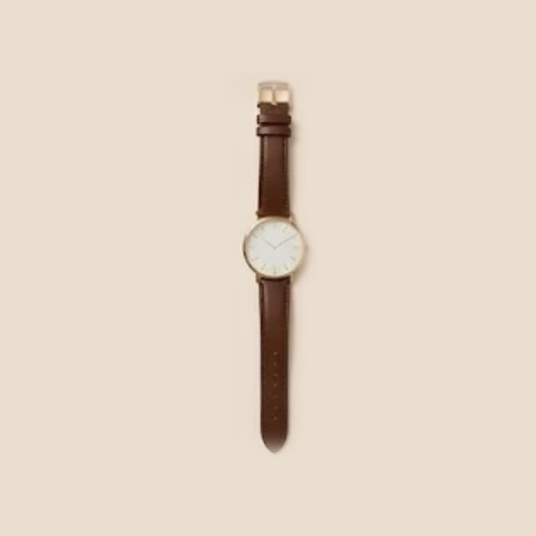

Elegant watches that look expensive and cost less
A simple, well-chosen watch makes an outfit look finished, from jeans to a dress. You don't need a luxury brand to get the effect. The right shape, size and strap do most of the work.
Disclosure: this page contains Amazon affiliate links. As an Amazon Associate I earn from qualifying purchases, at no extra cost to you.
1. Styles that always look elegant
- The minimal watch: a clean dial with thin hands and few or no numbers. It suits everything and never looks dated.
- The mesh-strap watch: a fine metal mesh band in gold or silver. It looks like jewelry and adjusts easily to any wrist.
- The leather-strap classic: a round dial on a slim leather strap in black, brown or cream. Soft and timeless.
- The bracelet watch: a small dial on a chain or link band. Perfect for evenings, and easy to stack with bracelets.
Shop minimal women's watches on Amazon
2. Choose the right size
For most wrists, a dial between 28 and 36 mm looks balanced and elegant. Small wrists suit 26–32 mm; larger dials (38 mm and up) make a bolder, more casual statement. If you're unsure, measure your wrist and compare it with the dial size in the product details.
3. Match the metal to your jewelry
Gold tones look warm with brown, beige and cream clothes; silver suits grey, navy and cool colors. Rose gold sits between the two. If you wear the same rings or earrings every day, choose a watch in the same metal so everything looks planned.

Shop gold leather-strap watches on Amazon
4. Check before you buy
- Case material: stainless steel lasts longer and is less likely to tarnish or irritate skin than plated alloy.
- Glass: mineral or sapphire glass scratches less than plastic.
- Water resistance: 3 ATM handles rain and hand-washing; it doesn't mean you can swim with it.
- Strap: check that it can be adjusted or replaced, and that the clasp feels secure.
- Reviews and returns: look for photos from buyers. They show the real color and size better than studio shots.
Keep it looking new
Take your watch off before using perfume, lotion or cleaning products, wipe it with a soft dry cloth, and store it away from other jewelry so the glass doesn't scratch.